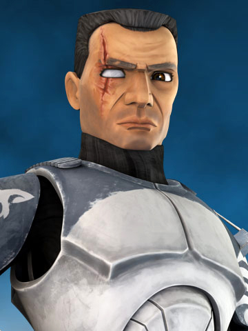

Soldado Wolffe
apodado "Wolffe", era un comandante clon veterano en el Gran Ejército de la República que fue asignado al General Jedi Plo Koon durante las Guerras Clon. Líder del escuadrón llamado "Wolfpack", el Comandante Wolffe sirvió con Koon a bordo de la nave insignia del Maestro Jedi, el Triunfante, cuando Koon llevó un destacamento para eliminar a la nave de guerra Separatista Malevolencia. Sin embargo, durante la batalla en el sistema Abregado, todos fueron eliminados, a excepción de Wolffe, Koon y los soldados Sinker y Boost. Poco después, los cuatro fueron rescatados por el General Jedi Anakin Skywalker y su padawan, Ahsoka Tano.

Volver